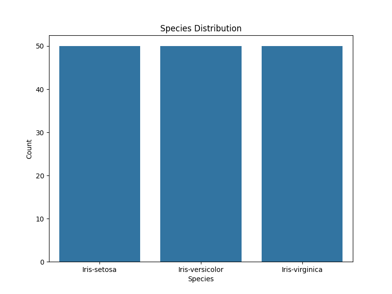
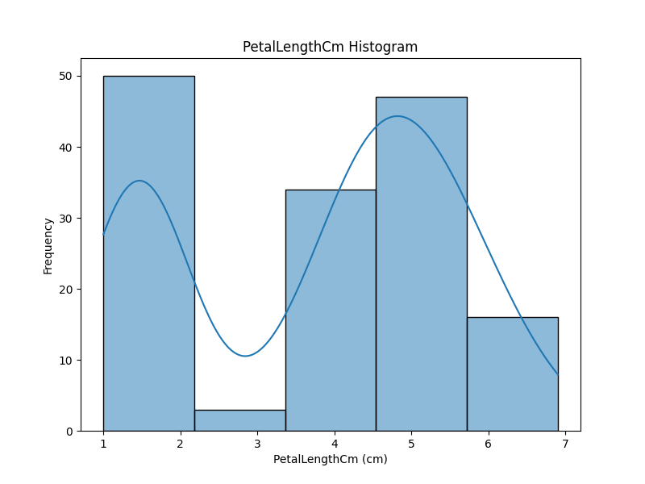
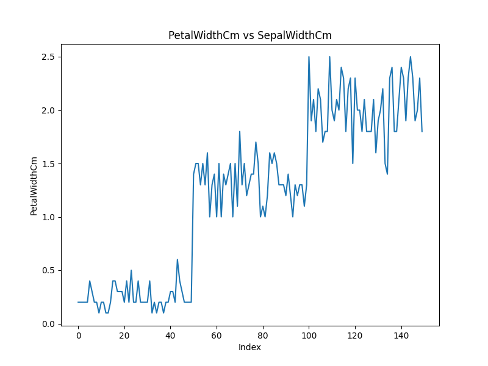
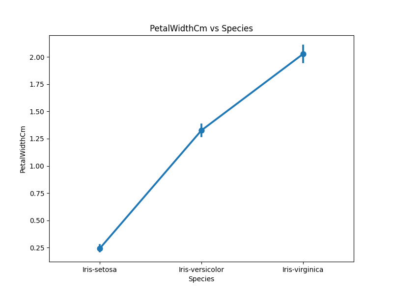
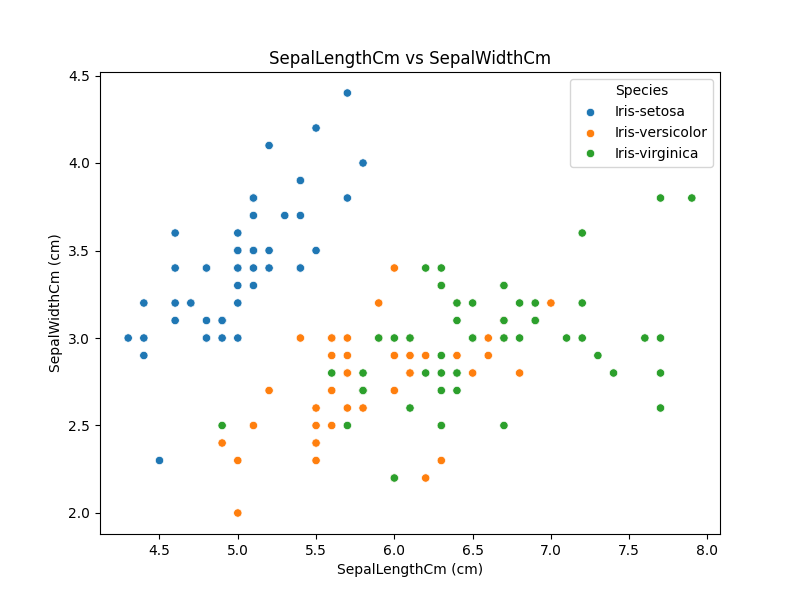
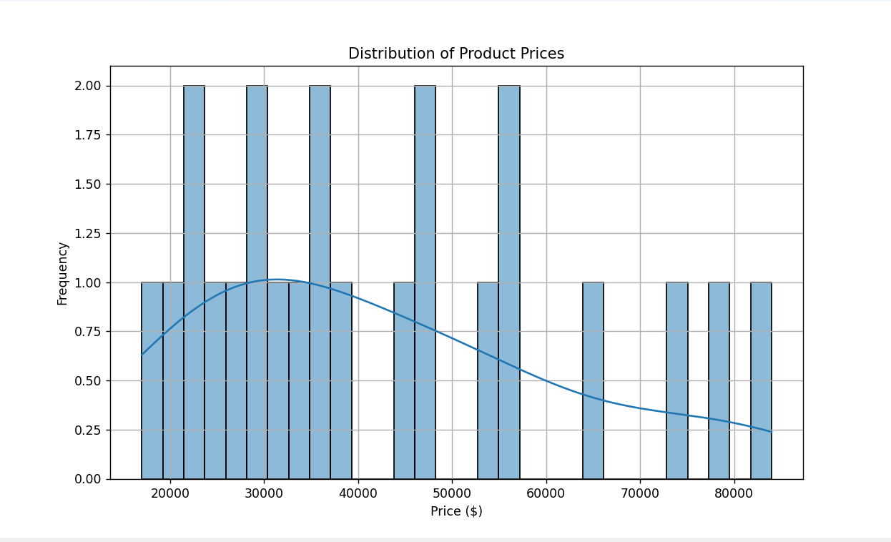
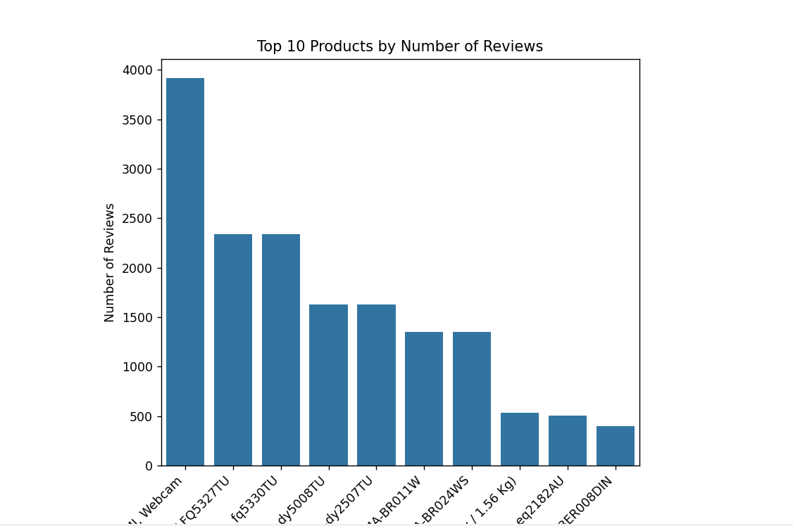
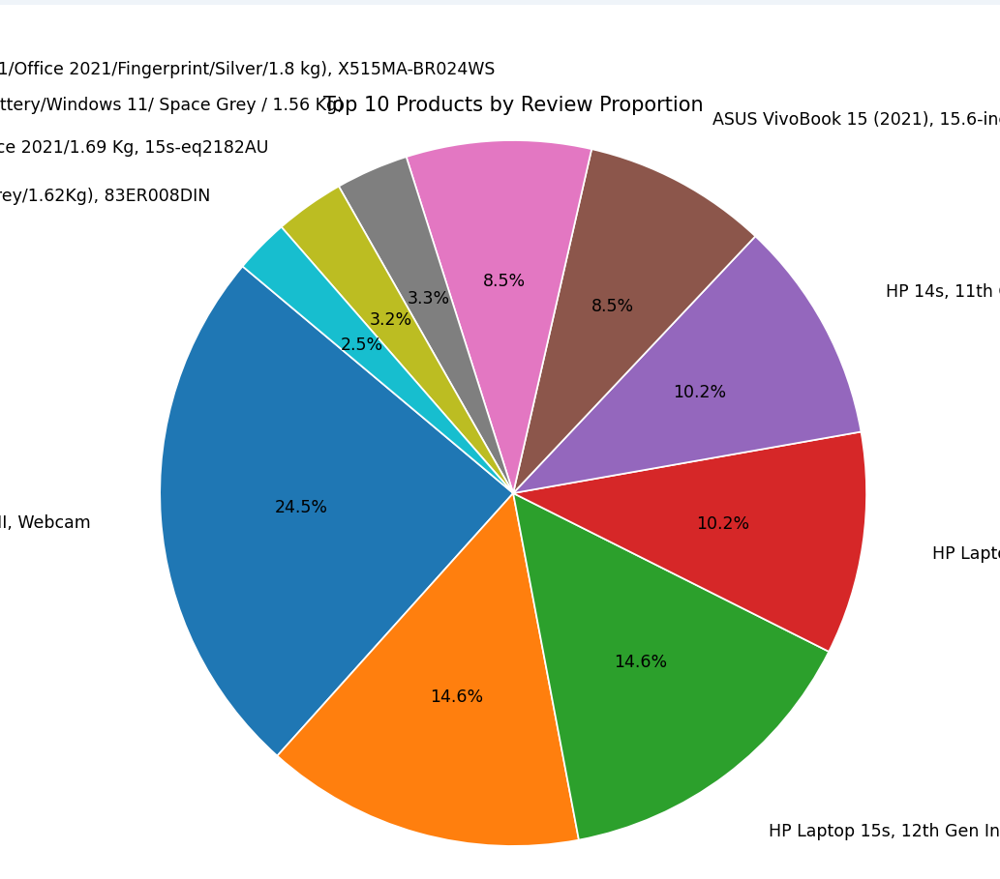

Overview
This webpage showcases two data analysis projects: the Iris dataset analysis, which explores relationships among flower species based on physical characteristics, and the Amazon dataset web scraping project, which extracts product details to visualize customer preferences. Together, they highlight the power of data extraction and visualization in understanding trends in both botany and e-commerce.
visualizations of iris dataset
BAR GRAPH:
HISTOGRAM:
LINE GRAPH:
POINT GRAPH:
SCATTER PLOT:
visualizations of amazon dataset
HISTOGRAM:

BAR GRAPH:

LINE GRAPH:
